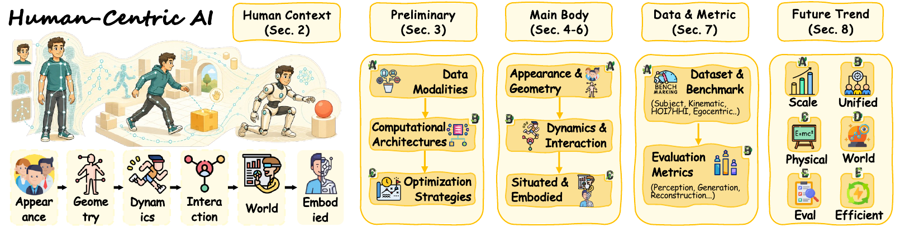
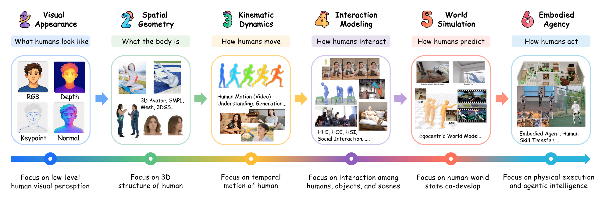
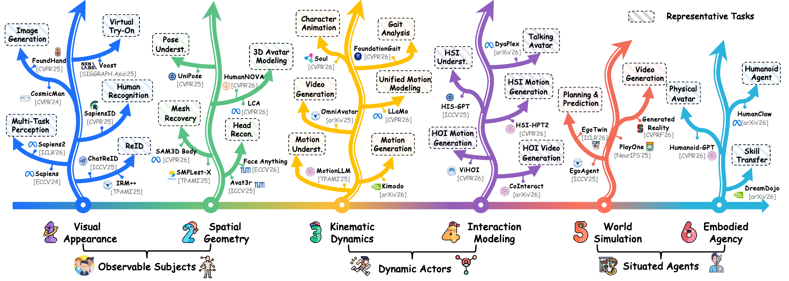
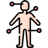

Human-centric intelligence across the full context spectrum
Human-centric intelligence is evolving in the foundation-model era, with growing emphasis on scale, transferability, and general-purpose modeling. Yet it has not fully integrated with foundation models to achieve the comparable progress seen in them. More importantly, recent advances across this broad landscape remain fragmented across tasks, modalities, and research communities, leaving their intrinsic conceptual and methodological connections unclear. To bridge these divides and rethink human-centric intelligence in the foundation-model era, we introduce a full-spectrum human context taxonomy that integrates six interconnected levels by viewing humans as observable subjects through visual appearance and spatial geometry, as dynamic actors through kinematic dynamics and interaction modeling, and as situated agents through world simulation and embodied agency. We next present the methodological foundations of the field, covering human-centric data families, computational architecture paradigms, and representative training and inference optimization strategies. We then systematically review representative methods across these levels and organize the associated datasets, benchmarks, and evaluation metrics. We further discuss open challenges and promising research directions toward human-centric intelligence that is scalable, trustworthy, physically grounded, and deployable, aiming to provide a coherent framework and practical reference for advancing the field. Finally, we provide a systematically organized and continuously updated collection of human-centric AI literature and resources on our project page.

Survey Overview
Human-centric intelligence concerns how computational systems characterize humans, connect knowledge across human contexts, and transform that knowledge into useful capabilities. Existing surveys typically organize this landscape around individual tasks, leaving the relationships among different human contexts and their methodological evolution in the foundation-model era largely unexplored. This survey instead connects these contexts across a progressive expansion from visible and structural properties to temporal behavior, interaction, world evolution, and executable action.

Our scope covers methods that characterize humans as observable subjects, dynamic actors, and situated agents. It includes both human-specialized foundation models and recent methods that reflect the broader foundation-era shift through scalable learning, reusable pretraining, multimodal interfaces, cross-task generalization, or transferable human priors. Broader topics such as human-computer interaction, human-oriented language modeling, and policy studies of human-centered AI fall outside this scope.
Human Context Taxonomy
We organize the literature according to its primary human context rather than a single architecture, modality, or application. Three complementary perspectives integrate the six interconnected levels.

Observable Subjects
Observable subjects concern properties that can be perceived from visual evidence or recovered as explicit body structure. Visual appearance focuses on image-space characteristics, while spatial geometry makes the organization of the body explicit in two-dimensional or three-dimensional space.
Visual Appearance
Visual appearance focuses on visible human characteristics in images and videos, ranging from low-level body and surface cues to identity-bearing attributes and controllable appearance.
- Generalist human perception
- Discriminative identity understanding
- Controllable human generation

Spatial Geometry
Spatial geometry moves beyond image-space characteristics to capture pose, shape, surface geometry, and spatial correspondence that remain meaningful across viewpoints.
- Structured geometry modeling
- Renderable avatar modeling
Dynamic Actors
Dynamic actors extend human-centric intelligence from observable states to behavior over time. Kinematic dynamics models the intrinsic temporal evolution of the body, whereas interaction modeling treats objects, scenes, and other people as integral components of human behavior.
Kinematic Dynamics
Kinematic dynamics models humans as temporally evolving subjects through structured motion sequences, sensory measurements, and photorealistic videos.
- Scalable motion modeling
- Human video animation
Interaction Modeling
Interaction modeling represents humans as relational participants whose behavior is jointly shaped by contact, object affordances, scene constraints, and communicative intent.
- Human-object interaction
- Human-scene interaction
- Social interaction
Situated Agents
Situated agents connect human behavior with changing environments and executable capabilities. World simulation models how actions and world states evolve together, while embodied agency converts human knowledge and experience into physically or operationally executable behavior.
World Simulation
World simulation models how human actions, observations, and surrounding states co-develop, supporting future generation, consequence prediction, simulation, and planning.
- Human-centered world generation
- Actionable world planning
Embodied Agency
Embodied agency transforms human motion, demonstrations, videos, and interaction experience into behavior that can be physically or operationally executed.
- Generalist humanoid control
- Human-to-agent skill transfer
Citation
If you find this survey and its accompanying resources useful, please consider citing our work.
@article{chen2026humancentricAI,
title={Human-Centric Intelligence in the Era of Foundation Models: A Survey},
author={Chen, Yang and Wang, Tianqi and Jiang, Xiaorui and Man, Yilei and Shao, Yihua and Liu, Mengyuan and Chen, Zhi and Cao, Xiaofeng and Zhao, Qibin and Liu, Chi Harold and Zomaya, Albert Y and Sebe, Nicu and Zhou, Jingren and Tao, Dacheng and Guo, Song and Guo, Jingcai},
journal={arXiv preprint arXiv:2608.18184},
year={2026}
}